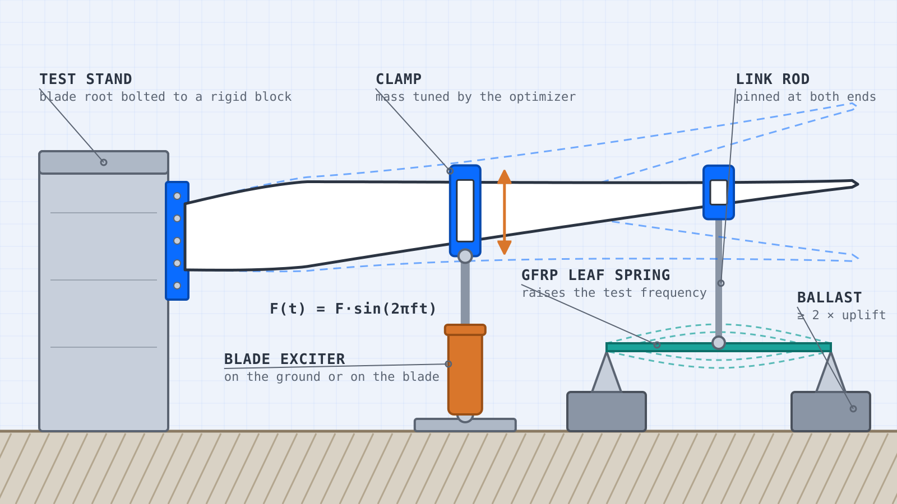

Optimisation · Structural dynamics · Test engineering
Fatigue Test Acceleration Optimizer
A full-scale fatigue test of a wind turbine blade runs millions of cycles at the blade's first natural frequency, which can take months. A glass-fibre spring under the blade raises that frequency, so the test finishes sooner. This tool finds where to put the spring and how stiff it should be, tunes the clamp masses so the bending moment still matches the target, and turns the result into a spec the workshop can build.

1 Blade and target load
Same file format as the Blade Fatigue Test Simulator, with the
target bending moment in the column Target Mom [kNm]. A few points (e.g. root plus three stations) are enough:
the target is interpolated between them. Your file is read in your browser and is never uploaded.
Test
In the test zone the bending moment must reach the target everywhere and may exceed it by at most the allowed overload.
Clamps on the blade (the optimizer tunes their masses)
| Position [m] | Mass in file [kg] |
|---|
Target bending moment
2 Exciter and spring
Exciter limits
Force, stroke and power are the steady values at resonance, with the moment scaled to the target.
Glass-fibre spring
Defaults are typical for unidirectional pultruded glass fibre (GFRP). The allowed stress amplitude is for the whole test, including safety. Get the real value from the material supplier's S-N curve.
3 Test time versus exciter power
All designs click a point to select it
Each point is one spring position and stiffness, with its own tuned clamp masses and sized beam. Grey points break a limit (hover to see which). The line is the best trade-off: nothing is both faster and needs less power.
Bending moment of the selected design
4 Workshop spec
Run the optimization to get a spec.
How it works
The blade, the clamps and the spring are one finite-element model, built with the same engine as the Blade Fatigue Test Simulator. The spring is a beam on two supports, linked to the blade by a rod at its mid-span. It is fitted after the blade has sagged under its own weight, so it only carries the test load.
1. Why a spring makes the test faster
The test runs at the first natural frequency. A spring of stiffness at the position raises it roughly as
where is the mass that moves with the spring (its clamp and part of the beam). The tool solves the full eigenproblem instead of this estimate, but it shows the trade-off: more stiffness is faster, more moving mass is slower.
2. Fitting the target moment
At resonance the blade swings in mode 1. The moment amplitude is the mode's moment times an amplitude , chosen so the target is reached everywhere in the test zone:
The spring pushes back on the blade, which lowers the moment inboard of it. So for each spring the clamp masses are tuned (a coordinate search over standard masses) to bring the moment curve back to the target with the least exciter power.
3. Exciter force, stroke and power
with the mode mass-normalised and the exciter position. Higher frequency means more power for the same swing, which is the price of the shorter test.
4. Sizing the glass-fibre spring
A beam of span and rectangular section , loaded at mid-span, deflecting :
with for a constant width and for a leaf spring whose width tapers from at mid-span to zero at the supports. Setting to the allowed stress amplitude gives the shortest beam, and its mass:
The mass does not depend on the width, so the width is a practical choice. It does depend on the energy the spring has to store, : a stiff spring far out on the blade quickly gets heavy. The leaf spring has the same stress along its whole length, so it needs a third of the material. If the span limit is reached, the beam is made wider and thinner instead. The beam is then put back into the model with its own mass, and the clamp tuning and sizing are repeated until they agree.
5. Holding the supports down
When the blade swings up, the rod pulls the spring up and each support is pulled up by
with the safety factor (default 2). The link hardware is included as assumed point masses: the yoke on the blade, the upper spherical bearing and half the steel rod move with the blade; the lower bearing and the other half of the rod () move with the spring's mid-span. The weight of the beam and the lower hardware counts, so the ballast to add is that minus half of it.
Assumptions: linear and small deflections, one bending plane, the supports are rigid, the spring has one pinned end and one end that can slide, and the test is at steady resonance in mode 1. Results are a design starting point: check the chosen set-up in a time simulation and with the material data.
The idea of adding springs to raise the test frequency is described in a 2020 paper in Wind Energy Science: A novel rotor blade fatigue test setup with elliptical biaxial resonant excitation. Generic blade: the public NREL 5 MW reference blade (NREL/TP-500-38060, data from the OpenFAST r-test repository, Apache 2.0). Its target moment, clamps and exciter are my own example values.